School of Poultry
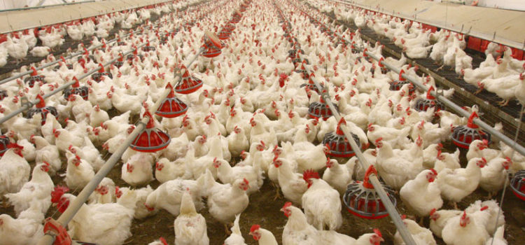
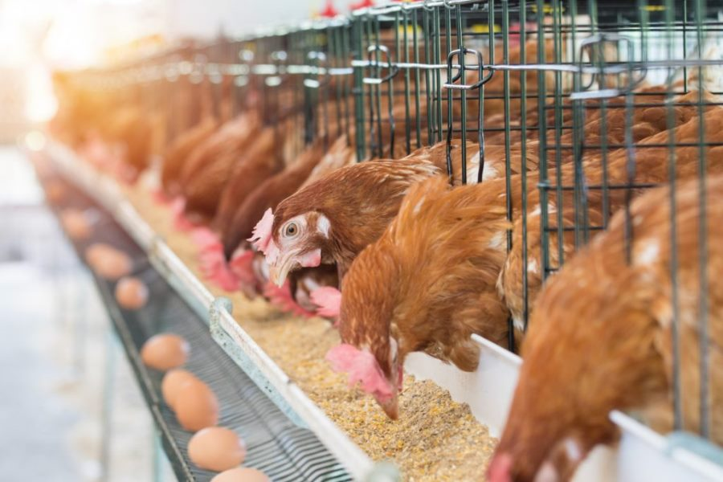
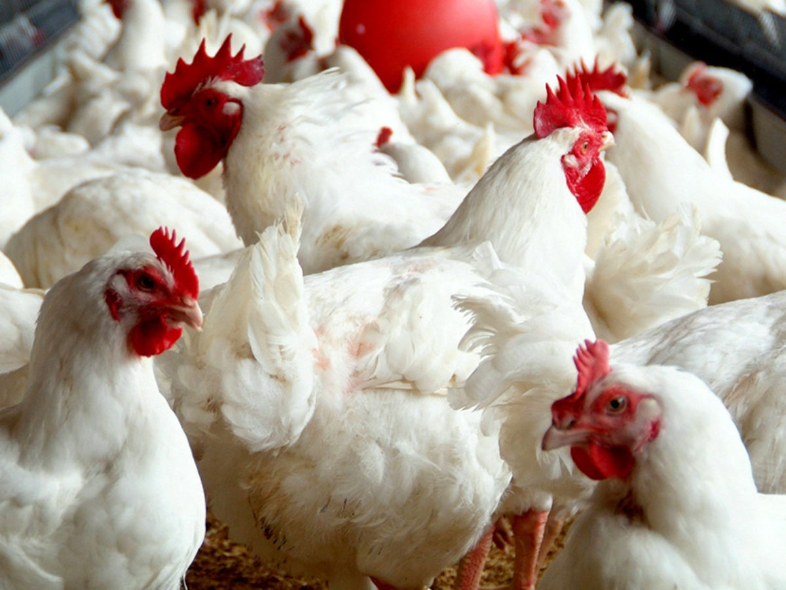
School of Fishery
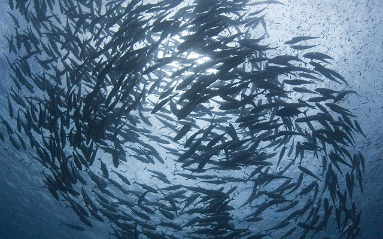
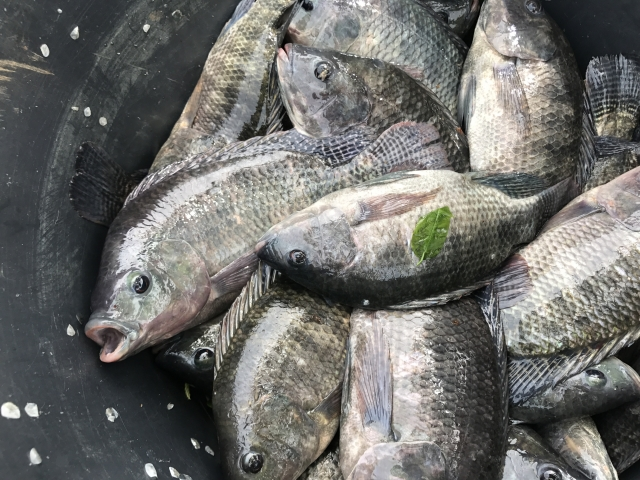
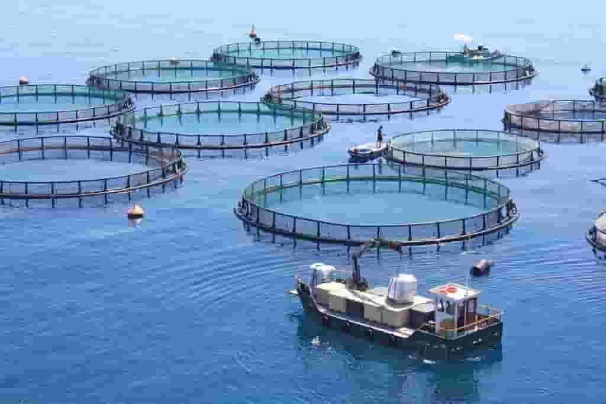
Farm products and Tools
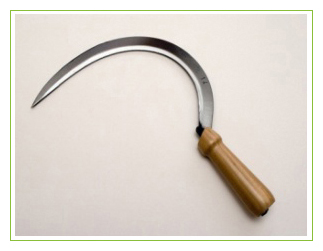
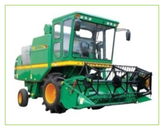
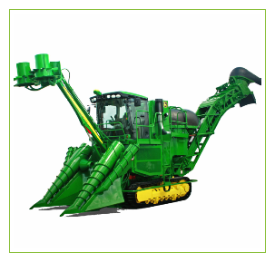
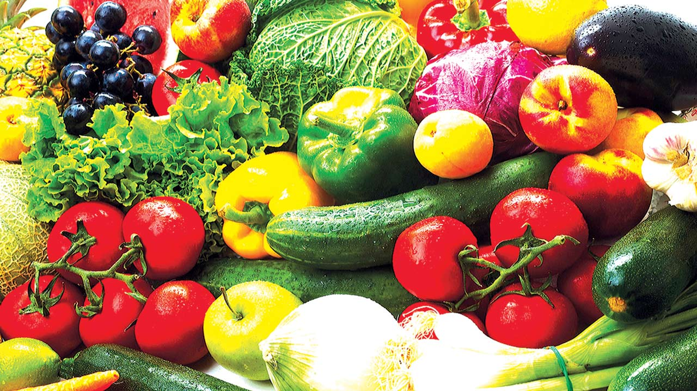
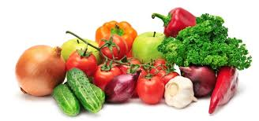
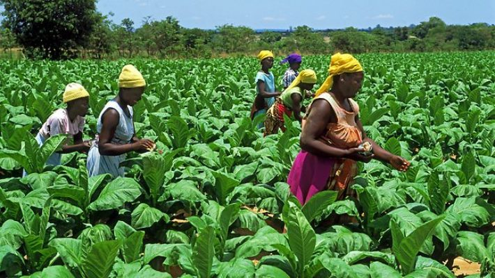
Agricultural products means an animal or plant or a product, including any food or drink that is wholly or partly derived from an animal or plant, and includes all after acquired Agricultural Products of the Producer, or any proceeds therefore. Click the dowwnlod button below to download our e-book
People's Views and Comments